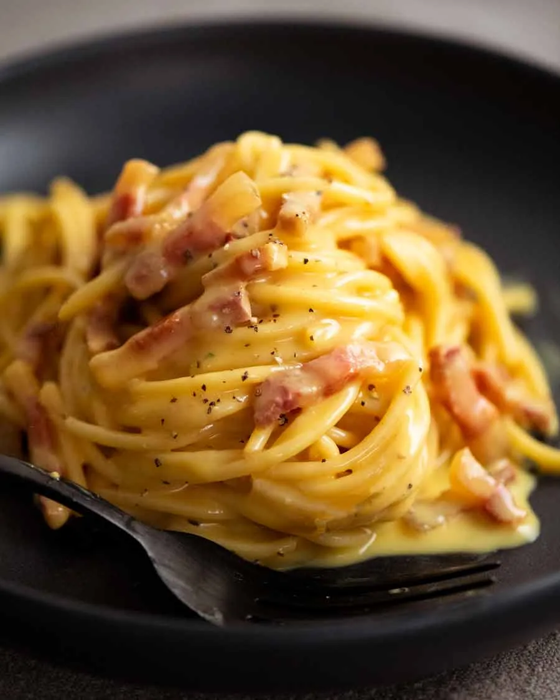

✨Carbonara✨

Tutaj mamy danie, które potrafi robić zdecydowanie za mało osób, czyli
carbonarę! Jest to kremowa i pełna smaku, a jednocześnie bardzo prosta
potrawa.
Składniki:
- 200g makaronu spaghetti
-
100g guanciale(raczej ciężko to zdobyć, boczek wędzony to jak
najbardziej świetny zamiennik, tylko nie kupujcie tego w płynie
wędzarniczym!)
- 2 żółtka i 1 całe jajko
-
50g sera Pecorino(znowu, ciężko go zdobyć, klasyczny parmezan się nada)
- Świeży, czarny mielony pieprz
- Sól (do gotowania makaronu)
Przygotowanie:
-
Pokrój guanciale/boczek w kostkę lub słupki, następnie podsmaż na
patelni, aby kawałki były złociste i chrupiące, a tłuszcz wytopił
się(nie odlewaj tłuszczu). Patelnię następnie zdejmij z ognia i wykonuj
następne kroki.
-
Makaron ugotuj al dente(OPAKOWANIE TAM SĄ INSTRUKCJE), zatrzymaj jednak
ok. pół szklanki wody po gotowaniu makaronu. W międzyczasie wymieszaj
większość sera, jajka i żółtka oraz pieprz w osobnej misce.
-
Wymieszaj boczek z makaronem na patelni(patelnia powinna być jeszcze
gorąca w tym momencie, ale nie zbyt gorąca).
-
Do patelni dodaj mieszankę sera, jajek i pieprzu i zacznij energicznie
mieszać, powoli dolewając wodę z makaronu (jeżeli patelnia będzie zbyt
gorąca, jajka się zetną i carbonara w bombki strzeli).
-
Po podaniu na talerzach dodaj pozostały ser i posyp pieprzem, i gotowe!
Nie jest to specjalnie trudne danie, ale wymaga odrobinę skupienia podczas
gotowania. Jeżeli planujecie ją zrobić, smacznego i powodzenia!